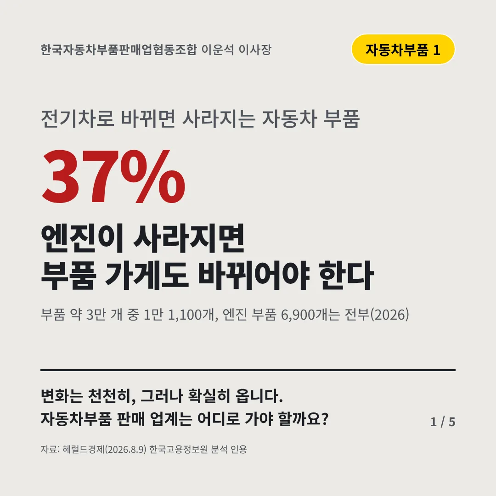
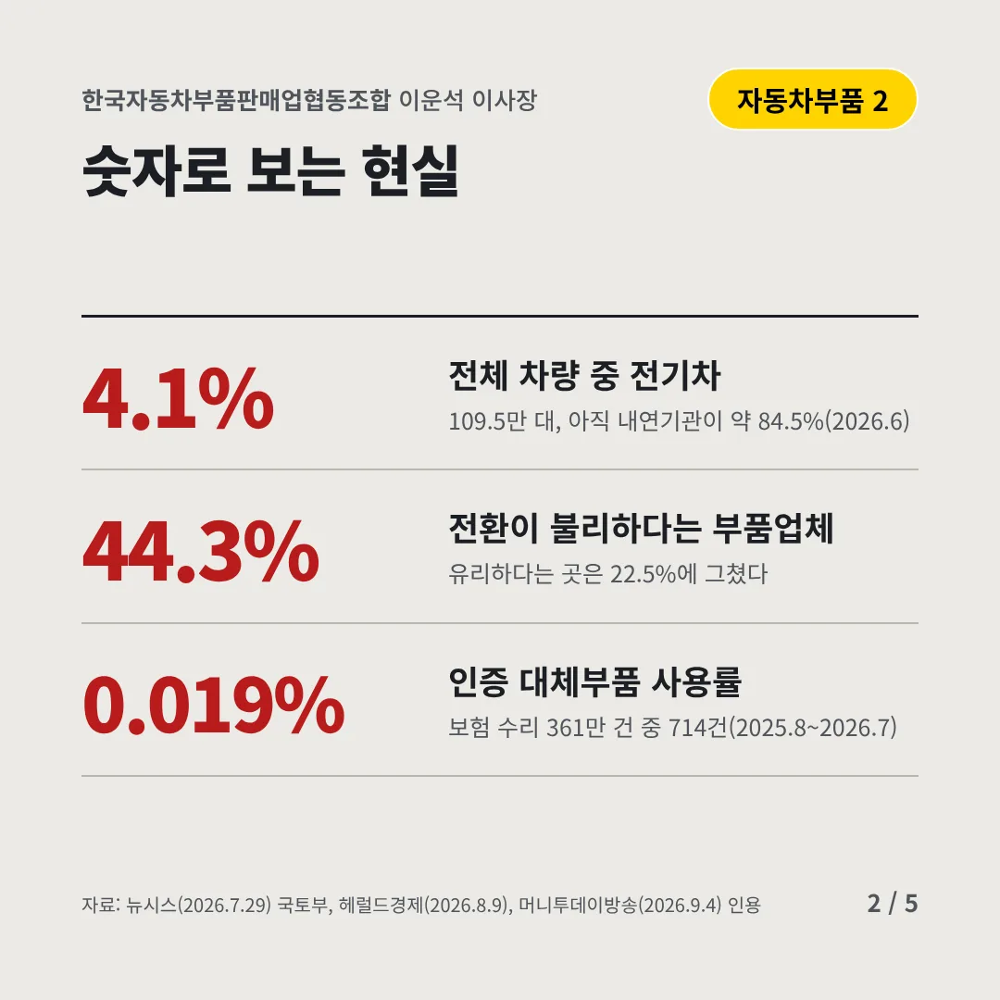
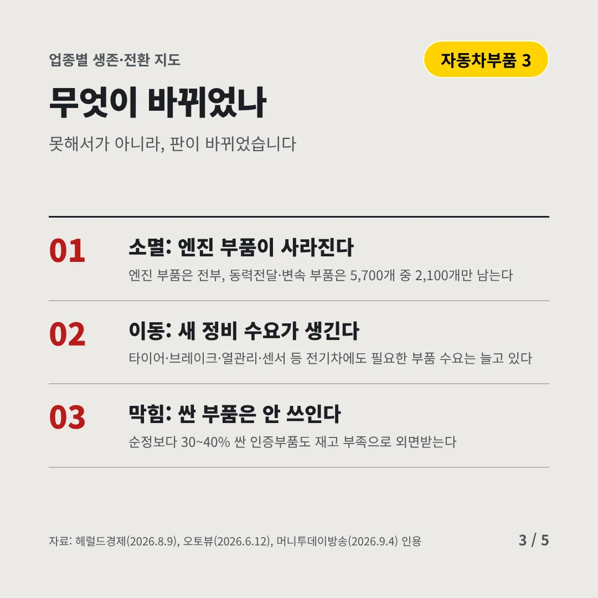
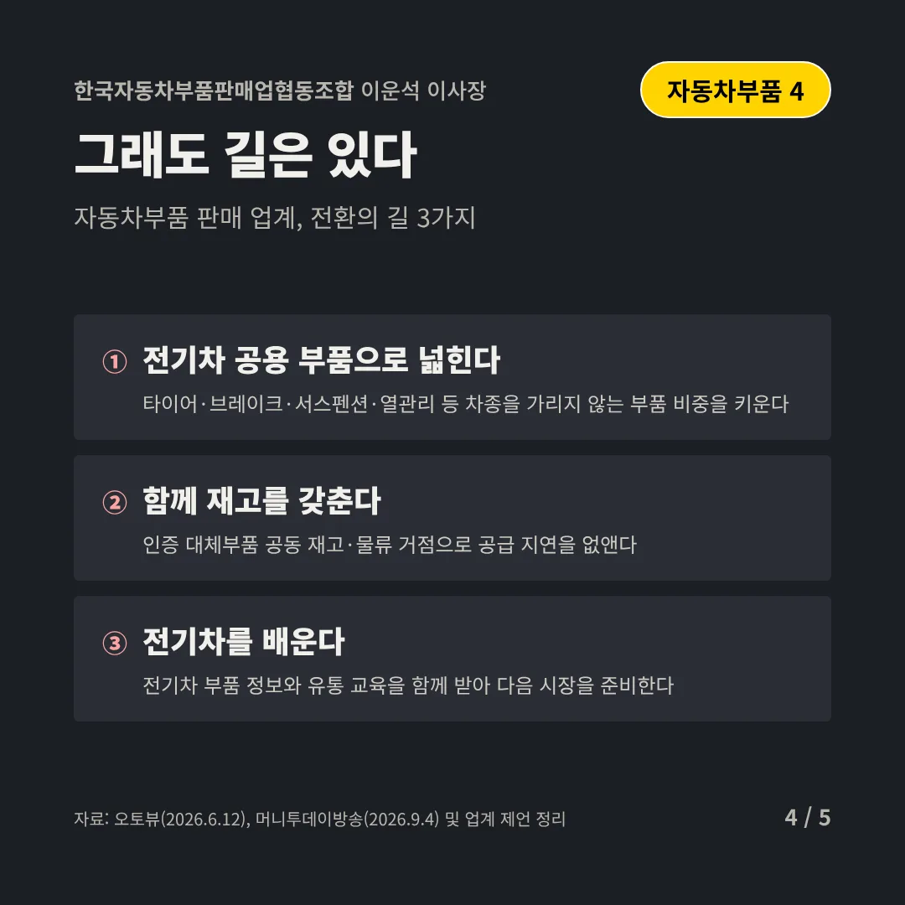
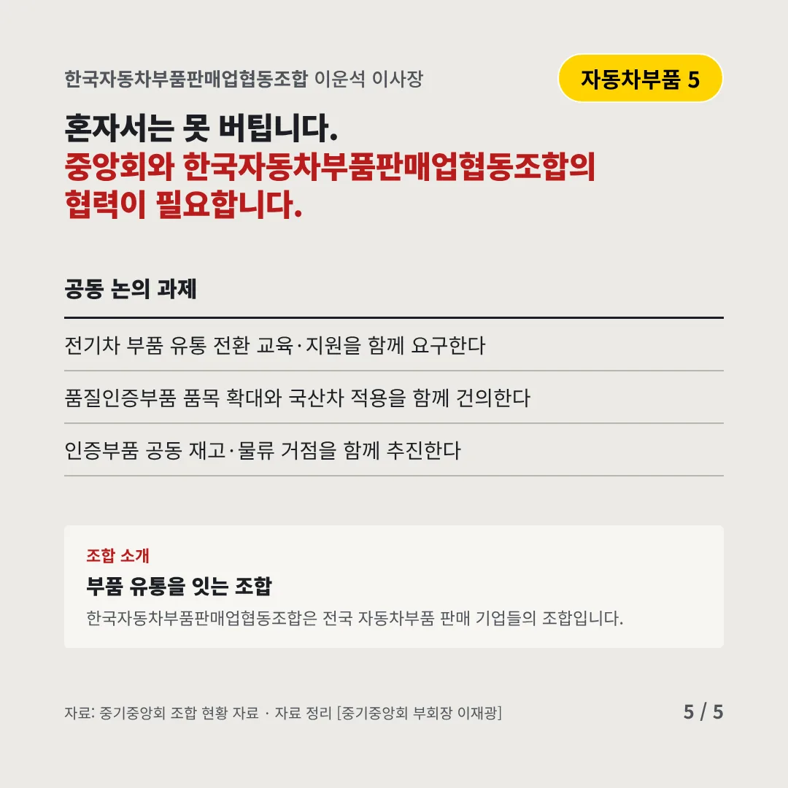
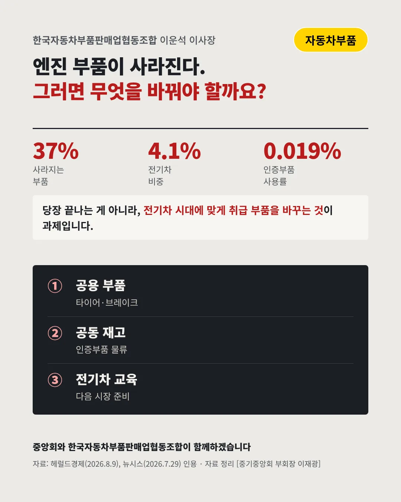

한국자동차부품판매업협동조합이운석 이사장
엔진이 사라지면 부품 가게도 바뀌어야 한다
37% 전기차로 바뀌면 사라지는 자동차 부품






변화는 천천히, 그러나 확실히 옵니다. 자동차부품 판매 업계는 어디로 가야 할까요?
숫자로 보는 현실
- 4.1%전체 차량 중 전기차109.5만 대, 아직 내연기관이 약 84.5%(2026.6)
- 44.3%전환이 불리하다는 부품업체유리하다는 곳은 22.5%에 그쳤다
- 0.019%인증 대체부품 사용률보험 수리 361만 건 중 714건(2025.8~2026.7)
무엇이 바뀌었나
- 소멸: 엔진 부품이 사라진다엔진 부품은 전부, 동력전달·변속 부품은 5,700개 중 2,100개만 남는다
- 이동: 새 정비 수요가 생긴다타이어·브레이크·열관리·센서 등 전기차에도 필요한 부품 수요는 늘고 있다
- 막힘: 싼 부품은 안 쓰인다순정보다 30~40% 싼 인증부품도 재고 부족으로 외면받는다
그래도 길은 있다
- 전기차 공용 부품으로 넓힌다타이어·브레이크·서스펜션·열관리 등 차종을 가리지 않는 부품 비중을 키운다
- 함께 재고를 갖춘다인증 대체부품 공동 재고·물류 거점으로 공급 지연을 없앤다
- 전기차를 배운다전기차 부품 정보와 유통 교육을 함께 받아 다음 시장을 준비한다
한 장 요약

조합 소개
한국자동차부품판매업협동조합은 전국 자동차부품 판매 기업들의 조합입니다.
자료: 헤럴드경제(2026.8.9), 뉴시스(2026.7.29), 머니투데이방송(2026.9.4), 오토뷰(2026.6.12)